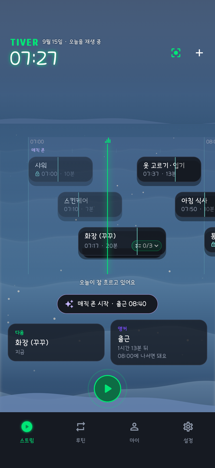
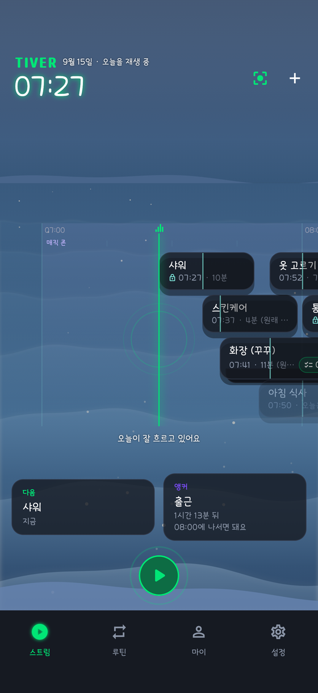
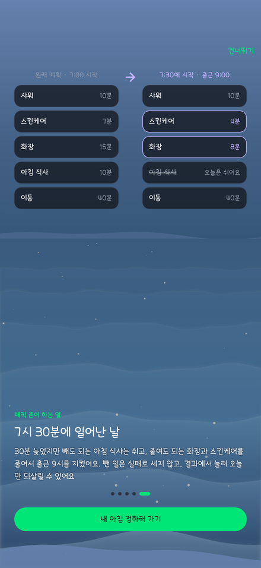
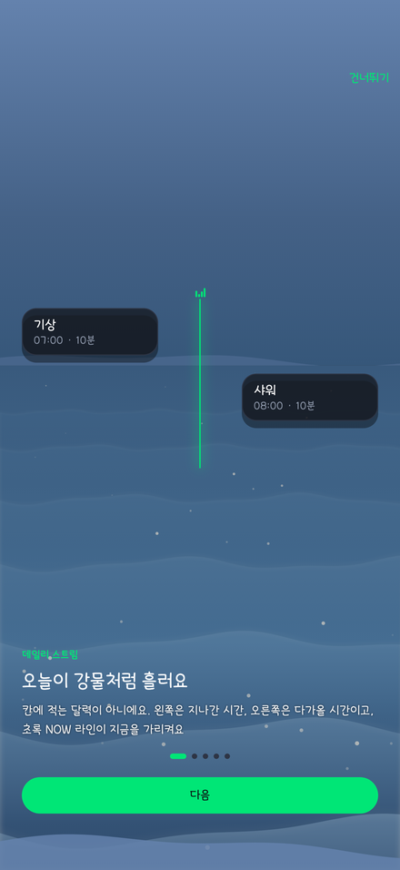
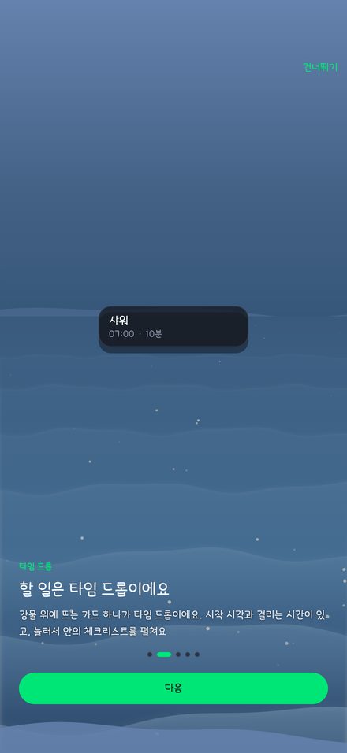
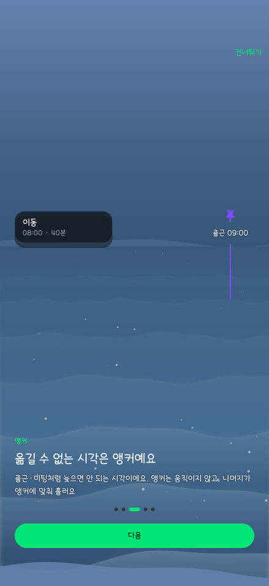
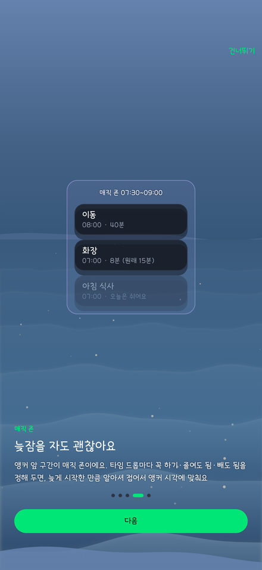

데일리 스트림
하루가 수평 축으로 흘러요. 현재(NOW)를 가운데 두고 지난 기록과 다음 흐름을 힐끗 봐요.
타석에 들어서는 타자처럼, 나만의 순서로 하루에 들어가요. 아침·운동·공부·잠들기 전 루틴을 강물 위에 올려 두면, 늦어진 날에도 꼭 할 것은 지키고 나머지는 줄여서 흐름을 이어요.
NOW 라인이 지금을 가리키고, 앵커(출근)까지 남은 시간에 맞춰 타임 드롭이 줄거나 쉬어요. 아래는 앱에서 그대로 뽑은 화면이에요.



TIVER 는 하루를 강물처럼 봐요. 흐름 위에 조각을 올리고, 움직이지 않는 축을 세우고, 변수가 생기면 다시 계산해요.
하루가 수평 축으로 흘러요. 현재(NOW)를 가운데 두고 지난 기록과 다음 흐름을 힐끗 봐요.
스트림 위에 툭 올리는 실행 단위예요. 시작 시각, 지속시간, 체크리스트를 가져요.
미팅, 출근처럼 옮길 수 없는 고정 마일스톤이에요. 흐름이 흔들려도 자리를 지켜요.
앵커 앞 구간이에요. 늦게 시작하면 빼도 되는 타임 드롭은 쉬고 줄여도 되는 것은 줄여서 앵커 시각에 맞춰요. 맥락을 읽는 AI 는 Phase 2 에 넣어요.
격자 달력과 달라서, 설정을 시작하기 전에 무엇을 보게 될지 먼저 알려 줘요. 설정 > 정보에서 언제든 다시 볼 수 있어요.




실제 기기에서 찍은 화면이에요. 매직 존을 한 번 누르면 뺄 것과 줄일 것을 골라 출근 시각을 지켜요.
출시한 것, 만드는 중인 것, 준비 중인 것을 그대로 적어요. 아직 없는 걸 있다고 쓰지 않아요.
먼저 스트림과 시간 엔진을 세우고, 그다음 AI 와 수익 모델, 마지막에 게이미피케이션과 생태계를 열어요.
씻고 먹고 나서기까지, 늦잠 한 번에 다 어긋나요
매직 존이 빼도 되는 건 쉬고 줄여도 되는 건 줄여서 출근·등교 시각에 맞춰요.
며칠 거르면 그대로 무너지는 게 싫어요
루틴 여러 개를 요일마다 다르게 흘려요. 하루를 걸러도 벌하지 않아요.
그날만큼은 같은 순서로 차분하게 준비하고 싶어요
앵커로 지켜야 할 시각을 세우면 나설 시각을 거꾸로 셈해 알려 줘요.
빨간 숫자와 끊긴 기록이 부담스러워요
지난 타임 드롭은 조용히 흘려보내요. 세지도, 재촉하지도 않아요.